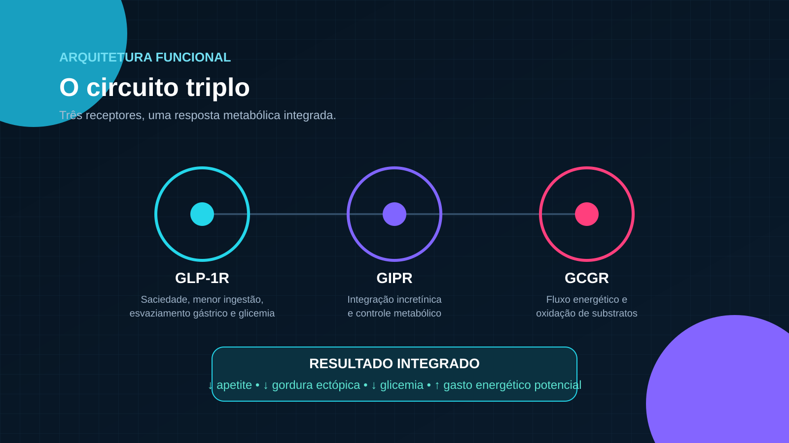
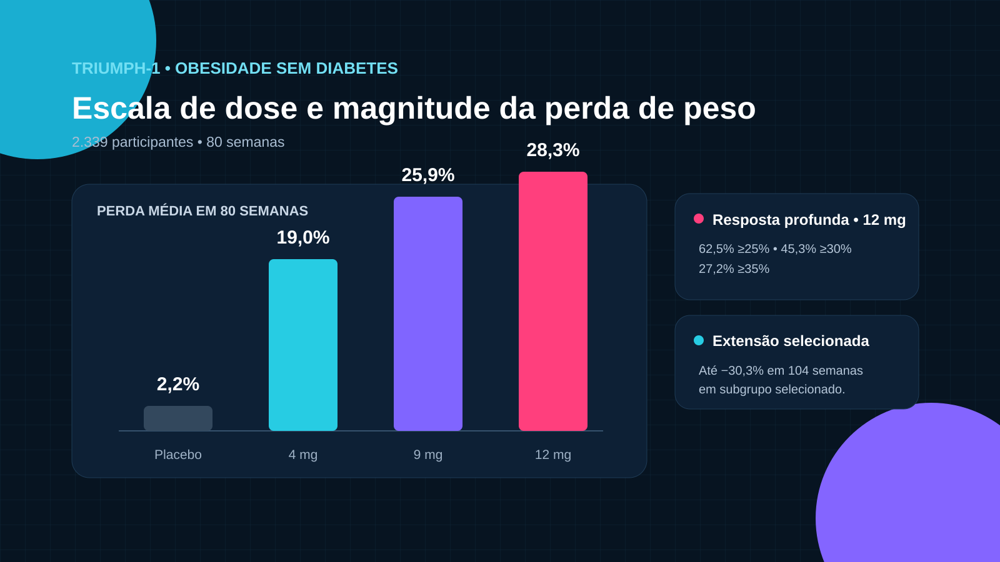
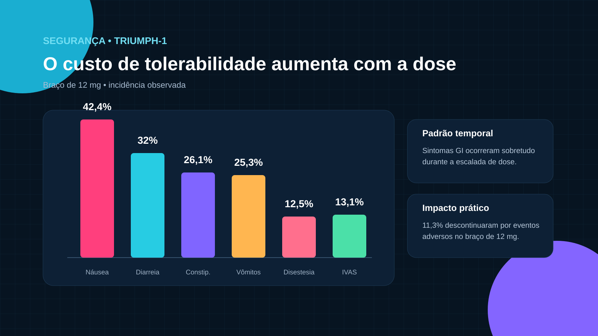

GLP-1R
Saciedade central, menor ingestão, atraso do esvaziamento gástrico e insulinotropismo dependente de glicose.
Retatrutida (LY3437943) é um agonista triplo investigacional dos receptores GIP, GLP-1 e glucagon. Esta página reorganiza o dossiê científico em formato web, preservando a lógica visual da apresentação original e separando mecanismo, eficácia, segurança e contexto regulatório.
O efeito final resulta do equilíbrio entre menor ingestão, sinalização incretínica, controle glicêmico e maior mobilização/oxidação de substratos. A contribuição isolada de cada receptor não pode ser deduzida de um único ensaio clínico.

Saciedade central, menor ingestão, atraso do esvaziamento gástrico e insulinotropismo dependente de glicose.
Amplificação do controle glicêmico e integração metabólica do tecido adiposo.
Maior fluxo energético e oxidação de substratos, em equilíbrio com os eixos incretínicos.
Na Fase 2 em obesidade, 338 adultos sem diabetes foram acompanhados por 48 semanas. A apresentação mostra perda média de 2,1% com placebo e até 24,2% no braço de 12 mg.
2,1% de perda média de peso.
22,8% de perda média de peso.
24,2% de perda média de peso.
No TRIUMPH-1, a apresentação resume 2.339 participantes acompanhados por 80 semanas, com extensão selecionada até 104 semanas.

| Estudo | População | Duração | Leitura principal no dossiê |
|---|---|---|---|
| TRIUMPH-1 | Obesidade/sobrepeso sem DM2 | 80–104 sem | Até −28,3% em 80 semanas; extensão selecionada até −30,3% |
| TRIUMPH-2 | Obesidade/sobrepeso + DM2 | 80 sem | Perda de peso até −20,8%; HbA1c também melhorou |
| TRIUMPH-3 | Obesidade grave + DCV | 80 sem | Perda de peso de −21,6% a −22,6% nos braços de 9/12 mg |
| TRIUMPH-4 | Obesidade/sobrepeso + OA de joelho | 68 sem | Perda de peso + melhora de dor e função |
| TRANSCEND-T2D-1 | DM2 | 40 sem | HbA1c até −2,0 p.p. e perda de peso até −16,8% |
No braço de 12 mg do TRIUMPH-1, sintomas gastrointestinais foram frequentes; disestesia apareceu como sinal neurossensorial distinto e dose-relacionado.

A apresentação enfatiza que diferenças numéricas entre ensaios distintos não provam superioridade. Populações, duração, estimandos e desenhos não são equivalentes.
| Dimensão | Retatrutida | Tirzepatida |
|---|---|---|
| Alvos | GIPR + GLP-1R + GCGR | GIPR + GLP-1R |
| Status no dossiê | Investigacional | Aprovada para indicações específicas |
| Obesidade sem DM2 | −28,3% em 80 sem no TRIUMPH-1, estimando de eficácia | −20,9% em 72 sem no SURMOUNT-1, desenho diferente |
| Segurança | Base crescente; sem farmacovigilância pós-comercialização | Experiência de Fase 3 e pós-comercialização |
O dossiê de 30 de julho de 2026 descreve um processo ainda incompleto: estudos pivotais, CMC, submissão planejada, aceite, revisão e decisão. Uma data planejada de submissão não é uma data de aprovação.
Cinco resultados positivos de Fase 3 no corte temporal da apresentação e sinais de eficácia dose-resposta.
Publicações completas de todos os resultados, comparação direta, outcomes cardiovasculares/renais, durabilidade e revisão regulatória.
A molécula permanece investigacional no enquadramento apresentado.
Esta página usa como base o dossiê fornecido e preserva sua distinção entre artigos revisados por pares, registros clínicos, comunicações do patrocinador e fontes regulatórias.